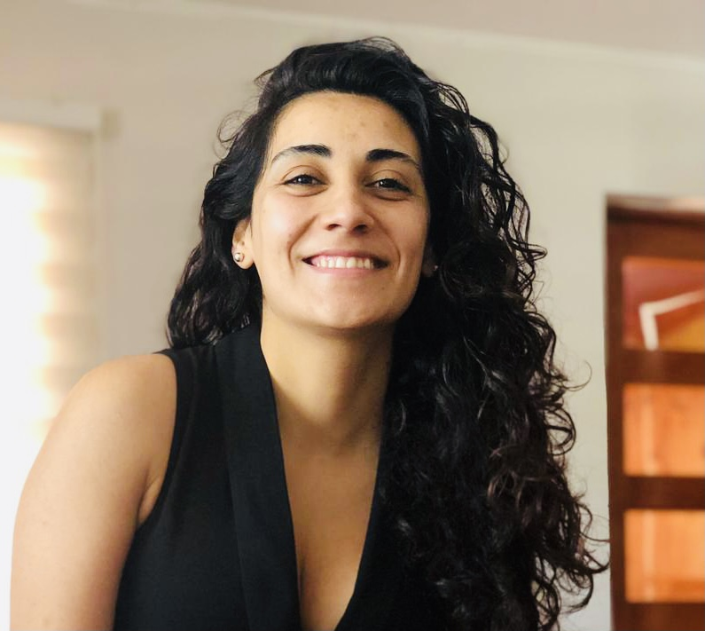

CURRICULUM VITAE MARÍA JOSÉ MATAMALA
DATOS PERSONALES
- Nombre completo: María José Matamala
- Fecha de nacimiento: 23-08-1994
- Lugar de nacimiento: Chile.
FORMACION ACADEMICA
- 2001-2012: Educacion Primaria y Secundaria - Liceo
- 2013-2019: Ingeniería Civil Industrial - Universidad del Desarrollo, Chile
- 2019-2019: Diplomado enBig Data y Ciencia De Datos Para Negocios - Pontificia Universidad Católica, Chile.
EXPERIENCIA LABORAL
- 2021-2023: Analista Control de Gestión - Empresa De Seguridad
- 2023-Actualidad: Analista Control de Gestión - Empresa Automotriz
HOBBIES
- Salir a trotar
- Jugar Futbol
- Andar en bicicleta